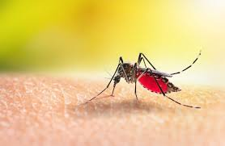

DENGUE
é uma doença febril aguda, sistêmica e dinâmica, variando desde casos assintomáticos a quadros graves, inclusive óbitos. Nos casos sintomáticos pode apresentar três fases clínicas: febril, crítica e de recuperação. crítica da doença, iniciando com sinais de alarme.
Quanto dura o tempo da dengue?
Varia de 3 a 15 dias, sendo, em média, de 5 a 6 dias. A transmissão ocorre enquanto houver presença de vírus no sangue do homem (período de viremia).
Como faço para saber se estou com dengue?
Normalmente, a primeira manifestação da dengue é a febre alta (39° a 40°C), de início abrupto
O que fazer quando a pessoa está com dengue?
Repouso relativo, enquanto durar a febre; • Estímulo à ingestão de líquidos; • Administração de paracetamol ou dipirona em caso de dor ou febre; Não administração de ácido acetilsalicílico; Recomendação ao paciente para que retorne imediatamente ao serviço de saúde, em caso de sinais de alarme.
Quais são as três fases da dengue?
Quais são as fases da dengue? A infecção pelo vírus da dengue é constituída de três fases: (1) a fase febril, (2) a fase crítica, e (3) a fase de recuperação. Todo o curso da doença tem duração de 7 a 10 dias, com cada fase durando cerca de 2 a 3 dias.
Quem tem dengue pode transmitir para outra pessoa?
não pode ser transmitido de pessoa para pessoa.
para ascessar o video no youtube clique aqui
